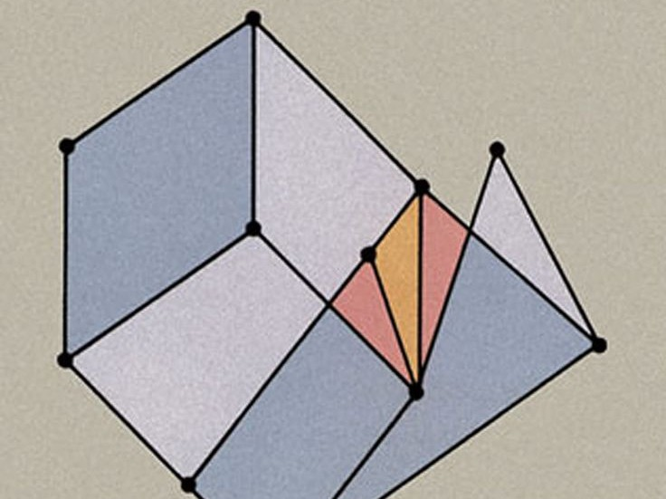

Khayr's Business & Tech Intelligence Agent
Keeping up with AI and tech news from various aspect and regions is soooo overwhelming. So i decided to build this workflow to filter out the noise and deliver personalized intelligence feed (breakfast!)
What you expect from a data analyst. And what you don't.
3 years turning insights into profitable actions.

Hello, Khairat here! A data and Growth Analyst born in Abuja, Nigeria. You'd find me between anything that drives actional business insights with data and anything that bridges math & code. I love building things that works and solve actual problems. I'm always learning new things and exploring Asian cultures for fun.
Here's what I actually do: My work sits at the intersection of analysis, problem-solving, communication and execution. I focus on telling the story behind the data, communicating insights clearly to both technical and non-technical teams, and translating analysis into practical recommendations that drive measurable business impact.
Most analysts build dashboards. I build direction. While others stop at insights, I connect the dots between data, people and processes - translating complex metrics into actions that execute.
Treat it as an ancient scroll you can utilize to become the best analyst you can think of. Just Kidding! But this is the most curated Data Analytics roadmap i've ever created. Don't hesitate
No signups. No forms. Just Instant access
[click the links for case studies!]
Keeping up with AI and tech news from various aspect and regions is soooo overwhelming. So i decided to build this workflow to filter out the noise and deliver personalized intelligence feed (breakfast!)

A lightweight SaaS designed specifically for mathematics undergrad to plan, track and understand their learning. As a math undergrad, i know this would be helpful to get those A's

A project for exploring linear algebra concept visually. Users can manipulate vectors, matrices, transformations and other concepts and immediately see the maths unveil
Are you working on something creative? I'm down to work on analytics and projects that solve real problems.